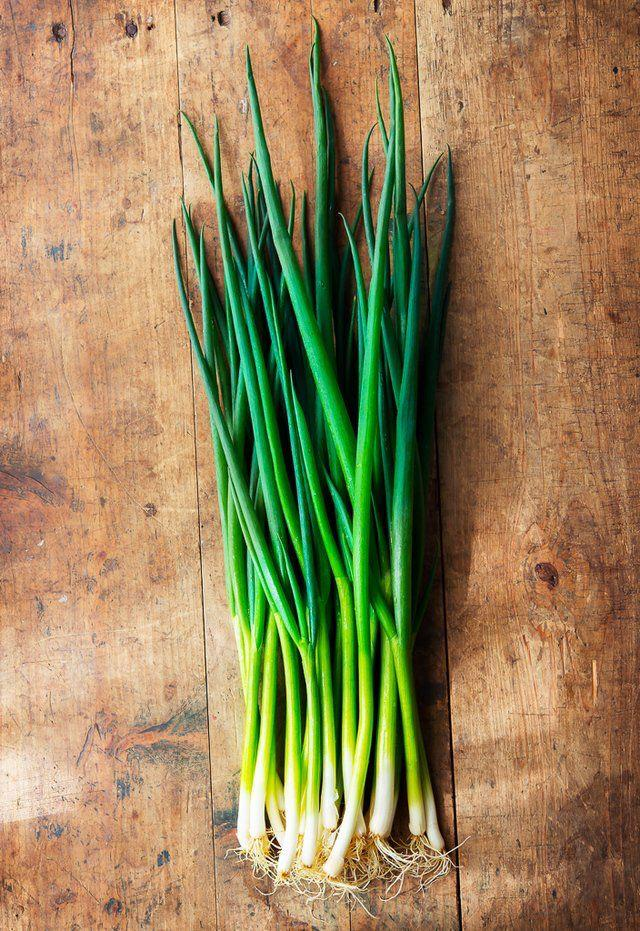

Cebolinha
🌱 Como cultivar
A cebolinha se adapta bem a vasos e hortas. Prefira solo fértil, bem drenado e sempre úmido, mas sem encharcar. Plante a partir de mudas ou sementes e deixe em local ensolarado. A colheita pode começar em cerca de 60 dias, cortando as folhas sem arrancar a raiz.
🍽️ Receitas
💡 Curiosidade
Você sabia que a cebolinha é parente da cebola, mas não faz você chorar? 😄 Ela adiciona sabor e frescor aos pratos sem lágrimas!